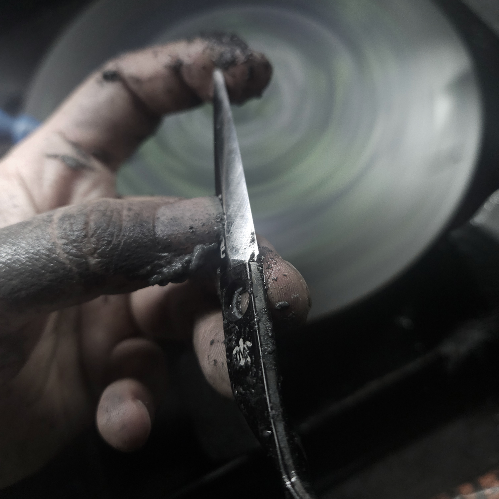

MAMORU RESTORATION
첫 날의 커트감을 되찾아 드립니다

MAMORU RESTORATION
일반적인 가위 수리, 그리고 마모루
01 / 03
판매한 사람에게 맡기고, 기다립니다. 딜러가 수거해 외부 업체로 보냅니다.
마모루는 직접 합니다
대표 책임자가 사용자와 소통하며 직접 진단하고, 직접 작업하며, 직접 책임집니다.
02 / 03
가위를 맡기고 얼마 가지 않아 불편함이 찾아옵니다. 당장의 불편만 덮는 수리입니다.
임시방편이 아닌 가위복원
가위 본연의 날각, 밸런스를 파악합니다. 새 제품을 제작하는 마음으로 진행됩니다.
03 / 03
새로 살 때가 되었다? 판매자에게 듣곤 하는 말입니다.
두 동강 나지 않은 이상 가능
새 포지션의 가위가 필요하거나 다른 형태를 원하는 경우가 아니라면 복원수리로 해결됩니다.
MAMORU
RESTORATION
복원수리 안내 — 새 가위 첫만남 그 순간으로, 복원하다
WHY MAMORU
01
판매한 사람에게 맡기고, 기다립니다. 딜러가 수거해 외부 업체로 보냅니다.
마모루는 직접 합니다
대표 책임자가 사용자와 소통하며 직접 진단하고, 직접 작업하며, 직접 책임집니다.
02
맡기고 얼마 가지 않아 불편함이 찾아옵니다. 당장의 불편만 덮는 수리입니다.
임시방편이 아닌 가위복원
가위 본연의 날각, 밸런스를 파악합니다. 새 제품을 제작하는 마음으로 진행됩니다.
03
새로 살 때가 되었다? 판매자에게 듣곤 하는 말입니다.
두 동강 나지 않은 이상 가능
새 포지션의 가위가 필요하거나 다른 형태를 원하는 경우가 아니라면 복원수리로 해결됩니다.